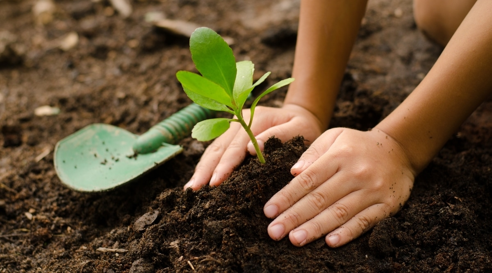
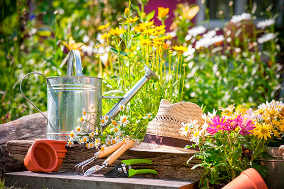

Gardening Basics

1. Site it right.
Starting a garden is just like real estate it's all about location. Place your garden in a part of your yard where you'll see it regularly (out of sight, out of mind definitely applies to gardening).
That way, you'll be much more likely to spend time in it.
2. Follow the sun.
Misjudging sunlight is a common pitfall when you're first learning to garden. Pay attention to how sunlight plays through your yard before choosing a spot for your garden.
Most edible plants, including many vegetables, herbs, and fruits, need at least 6 hours of sun in order to thrive.3. Stay close to water.
One of the best gardening tips you'll ever get is to plan your new garden near a water source. Make sure you can run a hose to your garden site, so you don't have to lug water to it each time your plants get thirsty.
The best way to tell if plants need watering is to push a finger an inch down into the soil (that's about one knuckle deep).
If it's dry, it's time to water.
4. Start with great soil.
When starting a garden, one of the top pieces of advice is to invest in soil that is nutrient-rich and well-drained. Achieve this just-right blend by mixing 3 inches of Miracle-Gro® All Purpose Garden Soil into the top 6 to 8 inches of existing soil if you're planning to plant in the ground.
If you're planting in a raised bed, use Miracle-Gro® Raised Bed Soil, which is the perfect weight and texture for raised bed growing.
5. Consider containers.
When space is at a premium, look to containers. You can grow many plants in pots, including vegetables, herbs, flowers, fruit trees, berries, and shrubs.
When gardening in containers, use a pot that's large enough for the plant it's hosting, and fill it with Miracle-Gro® Moisture Control® Potting Mix.
Not only is it specially formulated to help plants in pots thrive, but it also helps protect against over- and under-watering.

6. Choose the right plants.
It's important to select plants that match your growing conditions.
This means putting sun-loving plants into a sunny spot, choosing heat-tolerant plants in warm climates, and giving ground-gobbling vines like pumpkins and melons ample elbow room (or a trellis to climb).
Do your homework and pick varieties that will grow well where you live and in the space you have. And to get a step up on success when growing veggies and herbs, start with vigorous young plants from Bonnie Plants® instead of trying to grow from seed.
7. Discover your zone.
Knowing your "hardiness zone" can help you choose the best plants. Simply put, it describes the coldest place a plant can grow. The higher the zone number, the warmer the climate.
So if a plant is "hardy to zone 4" and you garden in zone 5, that plant will survive in your yard. If, however, you're in zone 3, it's too cold to grow that particular plant. Find out your hardiness zone.
8. Learn your frost dates.
Planting too early (or late) in the season can spell disaster for your garden.
You need to know the last average spring frost date for your area so you don't accidentally kill plants by putting them out prematurely. It's also good to know your first average fall frost date so that you get your plants harvested or moved indoors before late-season cold damages them.
Discover the average first and last frost dates for your area.
9. Add some mulch.
Apply a layer of mulch that's 2 to 3 inches deep around each plant. This will help reduce weeds by blocking out the sun, and reduce moisture loss through evaporation, so you have to water less.
For a polished look, put down a layer of Scotts® bagged mulch. Or, you can put down straw, shredded leaves, pine straw, or some other locally available material.
10. Feed plants regularly.
We've already talked about the importance of starting with great soil, but that soil works best in concert with regular boosts of high-quality nutrition for your plants.
In other words, amazing soil + top-notch plant food = super garden success! So, a month after planting, begin feeding your garden with plant food like Miracle-Gro® Water Soluble All Purpose Plant Food. Be sure to follow label directions.